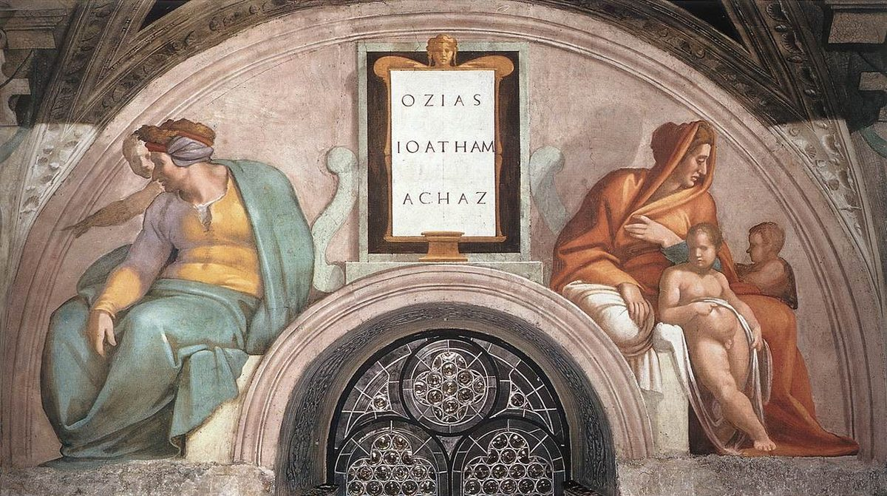

Isaiah 7 — The Mister Translation

One of the lunettes Michelangelo painted above the windows of the Sistine Chapel for the ancestors of Christ in Matthew’s genealogy; the tablet names three of them, OZIAS, IOATHAM, ACHAZ — Uzziah, Jotham and Ahaz, the three kings of this chapter’s first sentence, ‘Ahaz son of Jotham son of Uzziah’. The figures below are families, not portraits of the kings, and which figure stands for which name the painting does not say. Matthew 1:9 lists the same three, and Matthew 1:23 quotes this chapter’s verse 14.

★★ The chapter opens with a sentence another book also has. Rezin of Aram (Damascus) and Pekah of Israel come up against Jerusalem in the reign of Ahaz, and 2 Kings 16:5 tells the same campaign in almost the same words. The difference is one letter of grammar. Kings says ve-lo yakhlu, ‘and they could not’; Isaiah says ve-lo yakhol, ‘and he could not’ — a singular verb after two kings. The Greek Old Testament makes it plural (ouk ēdynēthēsan), and so does the NIV, ‘they could not overpower it’; the NWT 1984 keeps the singular, ‘he proved unable to war against it’, and so does the Geneva, ‘he could not overcome it’. This translation keeps it too. The verse also tells the end before the story starts: Jerusalem did not fall. Everything after it is about whether the king could believe that while the armies were still on the road.
★★ ‘Aram has settled on Ephraim.’ The verb is nachah, to come to rest, and the report can mean that Aram has made an alliance with the northern kingdom or that its army is already camped on Ephraim’s ground. The shelf divides on which. The KJV reads ‘is confederate with’, and the NIV ‘has allied itself with’; the Douay keeps the image, ‘hath rested upon’, and the NWT 1984 reads ‘has leaned upon’. ‘Ephraim’ is the prophets’ name for the whole northern kingdom of Israel, called after its leading tribe.
★ The shaking is said twice. Vayyana levavo… kenoa atsei-yaar: his heart ‘shook’ as the trees of the forest ‘shake’, the same verb for the king and for the trees. ‘The house of David’ is the address the whole chapter uses for Ahaz’s court; it comes back at v13, when the prophet loses patience with it.
★★★ Isaiah brings his son, and the son’s name is the message. Shear-jashub is two words, she’ar yashuv, ‘a remnant will return’ — and the chapter never explains why the boy is there. A name like that can be read as comfort (some will come back) or as warning (only a remnant will). Isaiah 10:21–22 spells the two words out as a sentence, and Romans 9:27 (already on these pages) quotes that sentence. The Greek translators did not leave the name alone either: they render it ‘the one who is left, Jashub’, and the Douay, following the Latin, reads ‘Jasub thy son that is left’.
★★★ ‘The conduit of the upper pool, on the highway of the Fuller’s Field’ is an address this book will use again, for the opposite meeting. ‘The upper pool’ stands in three verses of the Hebrew Bible: this one, Isaiah 36:2 and 2 Kings 18:17. In the later two, the Assyrian king’s envoy, the Rabshakeh, stands on that same spot to demand the surrender of Ahaz’s son Hezekiah. ‘The Fuller’s Field’ stands in three verses of the Hebrew Bible, the same three. Here a prophet meets a frightened king at the water supply and tells him not to fear two small kings; a generation later the army of the empire Ahaz is about to call in stands at the same water. A fuller washed and bleached cloth, and needed the water. Where the pool was is not known for certain; see the upper pool.
★★ ‘Two smoking tail-ends of firebrands.’ Zanvot ha-udim ha-ashenim — a zanav is a tail, and an ud is a stick pulled out of a fire. The plural ‘tails’ stands in two verses of the Hebrew Bible, here and at Judges 15:4 (now on these pages), where Samson ties torches between the tails of foxes. ‘A firebrand snatched’ stands in two verses of the Hebrew Bible: Amos 4:11 and Zechariah 3:2 (already on these pages), ‘is not this a brand plucked from the fire?’ Rezin and Pekah are not the fire, the image says; they are what is left of it, still smoking. The KJV reads ‘two tails of these smoking firebrands’; the NWT 2013 reads ‘two stumps of smoldering logs’; the TLB reads ‘those two has-beens’, which is the sense without the picture.
★★ ‘The son of Tabeel’ — the puppet king, never named. The coalition plans to break Judah open and seat a man of its own choosing. The Masoretic vowels write his father’s name Tav’al, with an a in the last syllable, where the same name at Ezra 4:7 is pointed Tav’el, ‘God is good’. Read with the a, the last syllable sounds like al, ‘not’, so ‘good-for-nothing’ is heard. Whether that is a deliberate scribal jab or just a variant pronunciation, readings differ, and this translation prints the name as it is usually spelled. The Greek has Tabeēl. Who he was is not known. The verb of v6, neqitsennah, is rare and uncertain: the KJV reads ‘vex it’, and the RV60 reads ‘aterroricémosla’; this translation reads ‘terrorize it’.
★★★ The oracle is a list of heads, and it stops one short. The head of Aram is Damascus, the head of Damascus is Rezin; the head of Ephraim is Samaria, the head of Samaria is ‘the son of Remaliah’ — Pekah is never given his own name in this speech, only his father’s. The obvious next line would be ‘and the head of Judah is Jerusalem, and the head of Jerusalem is…’, and the oracle does not say it. In its place comes the condition of v9.
★★★ ‘If you do not stand firm in faith, you will not stand firm at all.’ Im lo ta’aminu ki lo te’amenu — two forms of one root, aman, the root of ‘amen’. The first is the active verb, to trust, to lean your weight on something; the second is its passive, to be held firm, made secure. The ‘you’ is plural: it is said to the house of David, not to Ahaz alone. English cannot keep one word in both halves and stay natural, so this translation keeps one image, standing firm, in both. The passive form te’amenu stands in two verses of the Hebrew Bible: here, and at 2 Chronicles 20:20, where King Jehoshaphat turns this verse into a battle cry — ‘believe in Jehovah your God, and you will be established’. The shelf: the KJV reads ‘If ye will not believe, surely ye shall not be established’; the NIV reads ‘you will not stand at all’; the NWT 1984 reads ‘you will in that case not be of long duration’, and the NWT 2013 keeps the pair with ‘firm faith’ and ‘firmly established’. ⚠ The Greek Old Testament reads something else again: ean mē pisteusēte oude mē synēte, ‘if you do not believe, neither will you understand’.
★★ ‘Within another sixty-five years’ — the number nobody has dated cleanly. Damascus fell to the Assyrian king Tiglath-pileser III in 732 BC, and Samaria in 722, both well inside a child’s infancy, which is the clock of v16. Sixty-five years from Ahaz’s crisis (usually put about 734–733 BC) lands near 670. One reading ties it to the Assyrian resettlement of foreigners in the north under Esarhaddon, which Ezra 4:2 mentions — after that, Ephraim was ‘no longer a people’ in the sense of a nation of its own. Others regard the clause as a later note or a number that has come down damaged. This translation prints it as the text has it and does not resolve it.
★★★ ‘Go deep with your asking’ — or ‘deep as Sheol’. The consonants of v11 are ha‘meq sh’lh. The Masoretic vowels read the second word she’alah, an emphatic ‘ask!’ — ‘make it deep, ask it, or make it high, up above’. The same four letters can also be voweled she’olah, ‘to Sheol’, the world of the dead, which makes a neat pair with ‘the height above’. The shelf takes both roads. The KJV reads ‘ask it either in the depth’; the NWT 1984 reads ‘as deep as Sheʹol’; the NWT 2013 reads ‘as deep as the Grave’; and the Douay, translating the Latin, reads ‘unto the depth of hell’. The Greek Old Testament has neither: eis bathos ē eis hypsos, ‘into the depth or into the height’. This translation follows the Masoretic vowels. Either way the offer is the same: any sign at all, from the bottom of the world to the top.
★★★ Ahaz refuses in the words of the Law. ‘I will not ask, and I will not put Jehovah to the test’ uses the verb of Deuteronomy 6:16 (already on these pages), ‘you shall not put Jehovah your God to the test, as you tested him at Massah’ — the same verse Jesus quotes to the devil at Matthew 4:7 (already on these pages). Ahaz’s answer sounds pious. Isaiah does not take it that way. The difference is that the devil asked Jesus to force a sign God had not offered, and here God is offering one. 2 Kings 16:7–8 shows where he looked instead: he sends the Temple’s silver and gold to the king of Assyria to buy his help.
★★ ‘Your God’ becomes ‘my God’. At v11 the offer is from ‘Jehovah your God’. At v13, after the refusal, Isaiah says ‘you weary my God as well’. The pronoun moves in two verses.
★★★ The verse turns on one noun, and the noun can be checked. Almah means a young woman, a girl of marriageable age. As a noun for a young woman it stands in seven verses of the Hebrew Bible, four in the singular and three in the plural: Rebekah at the well (Genesis 24:43, already on these pages); Moses’ sister, sent to fetch a nurse (Exodus 2:8, already on these pages); ‘the way of a man with an almah’ (Proverbs 30:19); the girls playing timbrels in a procession (Psalm 68:26 in Hebrew numbering, 68:25 in English); the girls who love the bridegroom’s name (Song of Solomon 1:3, already on these pages) and the uncounted alamot beside sixty queens (Song of Solomon 6:8); and this verse (the others yet to come in this translation). The plural also appears as a musical heading, ‘al alamot’, at Psalm 46:1 and 1 Chronicles 15:20, a term whose meaning is unclear. With the article, ‘the almah’, the word stands in three verses of the Hebrew Bible: Rebekah’s, Miriam’s, and this one.
★★★ The Greek translators did not use one word for it. The Greek Old Testament renders those seven: parthenos, ‘virgin, maiden’, twice (Genesis 24:43 and Isaiah 7:14); neanis, ‘young woman, girl’, four times (Exodus 2:8, Psalm 68, Song of Solomon 1:3 and 6:8); and ‘in youth’ once (Proverbs 30:19). So parthenos at Isaiah 7:14 is a choice the translators made at two places out of seven — and the other is about Rebekah, whom the narrator has already called betulah and ‘whom no man had known’ (Genesis 24:16). Betulah is the other Hebrew word, the one with virginity more in focus, though it is not airtight either: Joel 1:8 (already on these pages) has a betulah mourning ‘for the husband of her youth’. Genesis 24 is the one passage where both words are used of the same girl, and readers draw opposite conclusions from it: that almah can describe a virgin, or that the narrator needed ‘no man had known her’ because neither word settled it alone.
★★★ ‘Is with child and will bear a son’ — the formula does not say when. Harah is an adjective, ‘pregnant’, with no tense of its own. ‘Pregnant and bearing a son’ stands in four verses of the Hebrew Bible, all of them announcements: to Hagar, who has already conceived (Genesis 16:11, already on these pages); twice to Manoah’s wife, who the same chapter says is barren (Judges 13:5, 7, now on these pages); and here. The same words can mean ‘is pregnant’ or ‘will conceive’, and context decides. This translation prints ‘is with child’, the plainest English for the words as they stand, and does not decide what the context decides.
★★★ Who names him? Four texts, four answers. The Hebrew ve-qarat is spelled so that it can be read ‘she will call’ or ‘you (a woman) will call’; the phrase ve-qarat shemo stands in two verses of the Hebrew Bible, here and in the angel’s words to Hagar, ‘and you will call his name Ishmael’. The Greek Old Testament has kaleseis, ‘you (singular) will call’. Matthew, quoting the verse, has kalesousin, ‘they will call’ (Matthew 1:23, already on these pages). And the Great Isaiah Scroll from Qumran is reported to read a form usually taken as ‘he’ or ‘one will call’ — the Israel Museum’s English of the scroll gives ‘his name will be Immanuel’ — which is reported here, not read in the scroll. The Douay makes it passive, ‘his name shall be called Emmanuel’. This translation follows the Masoretic text, ‘she will call’. The name itself, Immanu El, ‘God is with us’, comes back twice in the next chapter.
★★★ The shelf, read across. The KJV reads ‘a virgin’, and so do the ASV and the Douay — all three with the indefinite article, where the Hebrew has ‘the’. The NIV reads ‘The virgin’, and the Geneva ‘the virgin’. The TLB paraphrases, ‘a child shall be born to a virgin’. The NWT 1984 reads ‘The maiden’, and the NWT 2013 ‘The young woman’; the 1984 edition’s own footnote reports that the second-century Greek versions of Aquila, Symmachus and Theodotion read neanis, ‘young woman’, here. ⚠ The NWT 1984 also prints ‘Jehovah himself will give’ where the Masoretic text has Adonai, ‘the Lord’; its footnote calls the verse ‘one of 134 scribal changes from YHWH to Adhonai’ — places where, on a scribal tradition the NWT cites, Adonai was written in place of the divine name, which the NWT puts back. This translation prints what the Masoretic text prints: ‘the Lord himself’.
★★★ Three readings, with their pedigrees, and no vote. A sign for Ahaz in his own time. The sign is given to the house of David about 734 BC, and its clock is a child’s infancy: before the boy can tell evil from good, both enemy kings will be gone (v16). On this reading the young woman is someone the prophet could point to — a woman of the court, perhaps the king’s own wife, or the prophet’s (the next chapter has his wife bear a son with a sign-name and the same kind of clock, Isaiah 8:3–4). The oldest recorded Jewish answer named Hezekiah: Justin Martyr, about AD 160, says in his Dialogue with Trypho (ch. 71) that the Jewish teachers of his day read ‘young woman’ and referred the prophecy to Hezekiah. The figures in Kings, taken as they stand, make that hard: Ahaz was twenty when he began to reign and reigned sixteen years (2 Kings 16:2), and Hezekiah was twenty-five when he succeeded him (18:2), so Hezekiah was already about nine when his father came to the throne. A sign fulfilled in Jesus. Matthew quotes the verse in its Greek form, parthenos, over the birth of Jesus to Mary, and says that this happened ‘to fulfil’ it (Matthew 1:22–23, already on these pages, where the note on parthenos sets out what rests on the noun and what does not). Both at once. Many Christian interpreters hold that the sign had a first meaning for Ahaz and a fuller one in Matthew. Each reading takes the text seriously in a different way, and this translation reports them rather than choosing.
★★ A rendering that has been fought over in print. Justin’s own Dialogue is the first record of the argument, already conducted between Jews and Christians and already about this word. In 1952 the Revised Standard Version printed ‘a young woman shall conceive’, and the protest included a pastor in Rocky Mount, North Carolina, who burned a copy in public — an incident one of its translators, Bruce Metzger, recounts in his memoirs, reported here and not read. The quarrel is old, and it is about one Hebrew word.
★★★ ‘Curds and honey’ is said twice in the Bible, both times in this chapter. The pair chem’ah u-devash stands in two verses of the Hebrew Bible: here, of the child, and at v22, of everyone left in the land after Assyria has passed through. Chem’ah is soured or thickened milk — curds, or something like butter or yogurt. Read alone, v15 can sound like a land flowing with milk and honey, a promise of plenty; read with v22, it is what you eat when there are no fields left to sow, only a cow, two sheep and whatever honey an untended land gives. The chapter gives both, and the child’s diet is the same as the survivors’. The KJV, ASV and NWT 1984 read ‘Butter and honey’; the NIV reads ‘curds and honey’.
★★ ‘By the time he knows’ — or ‘so that he may know’. Le-da’to can mean either, and the shelf splits on it: the KJV and the Douay read ‘that he may know’, making the diet the cause of his discernment; the ASV reads ‘when he knoweth’, the NWT 1984 ‘by the time that he knows’, and the Geneva ‘till he have knowledge’. This translation reads it as time, because v16 then sets the clock in the same words: before the boy knows to refuse the evil and choose the good, the land of the two kings will be forsaken.
★★ The clock ran. 2 Kings 16:9 says the king of Assyria took Damascus and killed Rezin, and 15:30 that Pekah was assassinated by Hoshea; on the usual dates both had happened by 732 BC. The KJV reads v16 differently, ‘the land that thou abhorrest shall be forsaken of both her kings’, as one land losing two kings; the ASV reads ‘the land whose two kings thou abhorrest’, and the NWT 1984 describes Ahaz as ‘feeling a sickening dread’ of them.
★★ Then the good news turns. V17 is the same sign read forward: Jehovah will bring on Ahaz and his house days like none ‘since the day Ephraim turned away from Judah’ — the split of the kingdom after Solomon (1 Kings 12) — and the last words of the verse name what is coming: ‘the king of Assyria’. The help Ahaz is about to buy is the disaster.
★★ God whistles, and the empires come like insects. The fly from the far reaches of the Nile channels is Egypt; the bee from the land of Assyria is Assyria. The two powers that will fight over the land settle on every ravine, rock cleft, thornbush and watering place in it. The last of those words, nahalolim, stands in one verse of the Hebrew Bible, this one (the singular’s letters are a place-name, Nahalal, in Joshua and Judges), so its meaning is a guess from context: the NWT 1984 reads ‘watering places’, the ASV ‘pastures’, and the KJV ‘bushes’. The KJV’s ‘hiss for the fly’ and the NWT 1984’s ‘whistle for the flies’ are the same sound: a beekeeper’s call.
★★★ ‘The razor hired beyond the River’ is the bill for Ahaz’s policy. 2 Kings 16:7–8 has Ahaz send the silver and gold of the Temple and the palace to Tiglath-pileser as a present, with the message ‘I am your servant and your son; come up and save me’. Isaiah’s image takes the deal at its word: Ahaz hires a razor, and the Lord uses it on Judah. ⚠ The Greek Old Testament reads a different word: ‘with the great and drunken razor’ (memethysmenō). In Hebrew sakhar, to hire, and shakhar, to be drunk, are spelled with the same three consonants, and only a dot on one letter separates them — the Greek translators read the other one.
★★ ‘The head and the hair of the feet, and the beard as well.’ Shaving a man was a way to humiliate him and mark him as a captive. ‘The feet’ is a Hebrew euphemism for the genitals, and the shelf shows how translators handle it: the KJV keeps ‘the hair of the feet’; the NIV reads ‘private parts’; the NWT 2013 reads ‘the hair of the legs’. This translation keeps the Hebrew’s own words. The last verb, tispeh, ‘will sweep away’, is the one Abraham uses when he asks whether God will ‘sweep away the righteous with the wicked’ at Sodom (Genesis 18:23, already on these pages).
★★ A cow and two sheep, and more milk than the few survivors can drink. The farmer of v21 keeps alive one young cow and two sheep; so few people are left that the milk is more than enough, and the survivors live on curds and wild honey (v22) — the child’s food from v15, now a whole country’s. The NIV alone reads ‘two goats’ for the tson, which can mean either; every other version on the English shelf has sheep.
★★ A thousand vines at a thousand pieces of silver. The measure of a prized vineyard: one silver piece a vine. The Song of Solomon prices Solomon’s vineyard at Baal-hamon in the same round figure, ‘a thousand pieces of silver’ for its fruit (Song of Solomon 8:11).
★★★ ‘Briers and thorns’ is Isaiah’s own pair. Shamir va-shayit — the two words together stand in seven verses of the Hebrew Bible, and every one is in Isaiah: 5:6, where they overrun the vineyard of the song in chapter 5; these three, vv23–25; 9:17; 10:17; and 27:4 (none of the others translated here yet). Three times in three verses here the land goes back to them. The chapter that began with a hope of rescue ends with farmland turned to hunting ground (v24) and grazing range (v25).
★★ Verse 25 reads two ways. Lo tavo shammah yir’at shamir va-shayit can be ‘you will not go there, for fear of briers and thorns’ or ‘the fear of briers and thorns will not come there’. The first makes the abandoned hills too overgrown to enter; the second makes them still tended, and so free of thorns, but used only for grazing. The ASV reads ‘thou shalt not come thither for fear of briers and thorns’, and the NWT 1984 ‘you will not come there for fear of thornbushes and weeds’; the KJV and Geneva both read ‘there shall not come thither the fear of briers and thorns’, and the Douay ‘the fear of thorns and briers shall not come thither’. This translation follows the first reading, which fits the three verses of thorns it closes.
Echoes paid. Matthew 1:22–23 (already on these pages) quoted this chapter in Greek and pointed the Hebrew question forward to Isaiah; v14’s note takes it up. Genesis 24:43 and Song of Solomon 1:3 used almah and pointed here; Genesis 16:11’s birth-announcement formula is the one v14 uses. The remnant Isaiah 1:9 planted becomes the name of Isaiah’s son in v3, as that chapter said it would, and it is the remnant Romans 9:27 quotes. Ahaz, Jotham and Uzziah, named together in v1, are the three kings of Isaiah 1:1 before Hezekiah.
Echoes planted. Isaiah 8 continues straight on: a second son with a sign-name, a second child’s clock set against Damascus and Samaria, and Immanu El twice more (8:8, 8:10). Isaiah 36 brings the Rabshakeh to the upper pool, to Ahaz’s son. 2 Kings 16 tells the same reign from the court’s side, with the bribe the razor stands for. And the briers and thorns go on to 9:17, 10:17 and 27:4.
Decisions. The Masoretic Text throughout. ‘Jehovah’ for YHVH (vv3, 10, 11, 12, 17, 18); ‘the Lord’ for Adonai (vv14, 20), and ‘the Lord Jehovah’ for Adonai YHVH (v7). ‘Aram’, not Syria, for the kingdom of Damascus. Ve-lo yakhol keeps its singular, ‘he could not’ (v1). Shear-jashub is printed as a name with its meaning beside it (v3). Ta’aminu… te’amenu is ‘stand firm in faith… stand firm’, keeping one image in both halves (v9). She’alah follows the Masoretic vowels, ‘asking’, with ‘Sheol’ in the note (v11). Ha-almah is ‘the young woman’, with its article; harah is ‘is with child’; ve-qarat is ‘she will call’ (v14). Chem’ah is ‘curds’ (vv15, 22). Ha-sekhirah is ‘hired’, with the Greek’s ‘drunken’ in the note, and ‘the hair of the feet’ is kept (v20). V25 is read ‘you will not go there, for fear’.
Library. Eight new encyclopedia entries in both languages: Ahaz, Jotham king of Judah, Rezin, Pekah, Shear-jashub, the son of Tabeel, Assyria, and one place, the upper pool. Uzziah, Isaiah, Aram, Damascus and Samaria now cite this chapter, and Uzziah has its Spanish entry. Two new dictionary entries in both languages: Immanu El and chem’ah. Extended: almah (now with its Spanish entry), aman, ot and Sheol.
⚠ A note on order: Isaiah stands on these pages at chapters 1, 7, 40, 41 and 53. Isaiah 2–6, 8–39, 42–52 and 54–66 remain open.